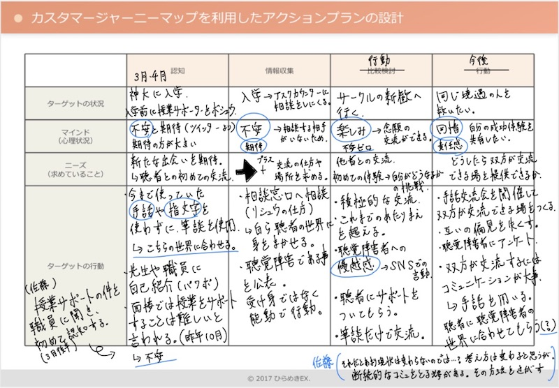
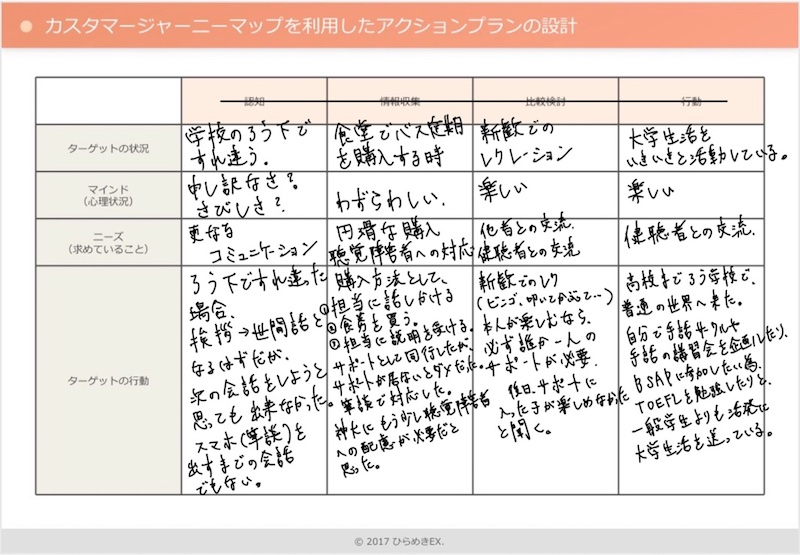
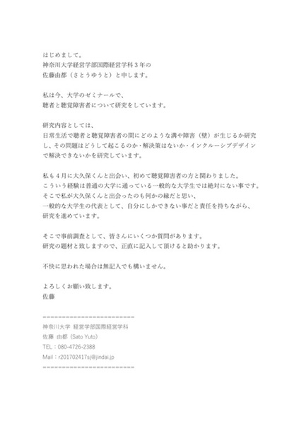

近況報告（–6/24）
■前回までの課題
・カスタマージャーニーマップ再作成→再考察
・健聴者と聴覚障害者に向けた"事前調査"のアンケートの結果
・平塚ろう学校へ向けた準備
■カスタマージャーニーマップ再作成
前回の作成時には研究対象の大久保氏と過ごした事を、ただ時系列に書いてまとめただけだったので、
今回は彼と過ごして、聴覚障害が障害として感じた事をまとめる。
（下記画像一枚目が第一弾、二枚目が第二弾）
■カスタマージャーニーマップ再作成より考察
・我々健聴者のコミュニケーションは必要なことでもお互いの”交流”の名目で会話するが、聴覚障害者はそれが実質不可能。
我々とはコミュニケーション自体の世界観や価値観が違うのではないか。（健聴者・聴覚障害者間に限る）
→我々のコミュニケーションの世界観や価値観以外を調査する。
・神奈川大学の設備や仕組みの問題もあると思う。早稲田大学などの他大学では聴覚障害フリーな仕組みがあるという。
→他大学の取り組みを調査し、神奈川大学と比較する。


■健聴者と聴覚障害者に向けた"事前調査"のアンケート
”事前調査”と題して健聴者、聴覚障害者それぞれ男女10代から30代から調査。
※匿名調査と告知、但し書きの画像を添付。全て自由記入。Googleフォームを使用（下記画像添付）
健聴者向け：佐藤所属サークルの友人12人、教育支援センター職員1人
聴覚障害者向け：研究対象の国際経営学科1年大久保のろう学校の友達9人

■質問内容と回答結果
●健聴者向け
①聴覚障害者と接してみて、なにか感じる事はありますか。
・直接接するよりも、言葉や内容を伝えるスピードが遅くなる。
・普通に会話ができないため、PC入力や手書きで伝えるのが普通であるが、やはり話している時よりも遅くなるから、急な用事などは伝えにくい。
・特に大事なわけでは無い内容を伝えたい時書くべきか迷う。
・ろう者の方を含めて話しているときに、一回一回手話で通訳したり、ノートに書いたりしなくてはいけないこと
②聴覚障害者との関わりで、どのような場面が一番”壁”と感じますか。
・自分の声色が相手に聴こえないこと。相手の声色も聴けないこと。声色で相手の感情を判断することができないこと。
・筆談でのやりとりになるので、「今」の情報を伝えたいときに、時間がかかってしまうこと。
・伝えるのに時間がかかってしまうこと
・つい口にでる「それな」などという言葉があまり共有できない
③(該当者のみ)手話を覚えたきっかけと、覚えて良かった事を教えてください。
・まだ全然覚えてないですが、手話が出来れば歩きスマホしなくて良くなるので危なくないかなって思います。
・これをきっかけに他の多くの聴覚障害者の方と関われる事
・もちろん彼らとの交流が円滑になる。
●聴覚障害者向け
①普段の生活で何か、不便に感じる事・煩わしく感じる事はありますか。
・公共施設（駅内放送）のアナウンスが聞こえない（3人）
・電話の受け答えができない（2人）
・店員に対して適当に頷く
・アラームが聞こえない
②聴者との関わりの中で、何が一番壁を感じますか。
・ディスカッション、会話についていけない(7人)
・音楽が好きだが、リズムや音程の違いがわからない為、不安になる。
・そういった耳が聞こえる、聞こえないの違いが出るところにいると羨ましいと思うし、なによりもなんで自分だけこうなったんだろと考えられます。
③聴者・聴覚障害者を問わずに、コミュニケーションを取るときに一番取りやすい方法を教えてください。（手話・筆談・指文字・読唇術etc.. ）
・手話(8人)
・筆談(3人)
・口話(2人)
■アンケート結果からの考察
●健聴者向け
・会話の伝達スピード
・急な用事は伝えづらい
・大事ではない内容は伝えるべきか
・感情がわからない、伝わらない（声色）
→主にコミュニケーションでの壁を感じている。
感情が伝わらないので、コミュニケーションの邪魔になっている。(のか？)
●聴覚障害者向け
・公共施設、アナウンス、電話、店員に対して、
”聞かないといけないもの”が”聞こえない”ため、やり過ごすしかないのが現状である。
・話し合いについていけない、入れない。
→世の中が健聴者に向けた仕組みで出来ているので、当たり前ではあるが不便である。
自分だけなぜこうなってしまったという感情（劣等感）
■今後の展望
・カスタマージャーニーマップで見つけた考察を元に、
①聴覚障害者にとっての会話（コミュニケーション）の価値観、世界観を調査する。②他大学での取り組みを調べ比較する
・事前調査アンケートにて、感情に関して健聴者・聴覚障害者の間で違うことがわかった。
今後は感情によって行動が変わるのか、聴覚障害者にに限らずに異なった障害を患った方の感情に関する論文を読んでいく。